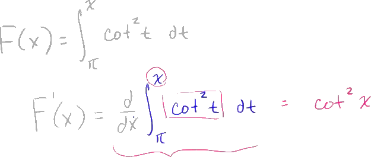
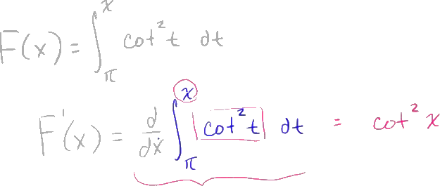

And It's like, oh my god, I have to take the antiderivative of all of this business, evaluate it at the different boundaries, and then I got to take the derivative. No. You just apply the fundamental theorem of calculus, and it's actually a very straightforward and a very fast thing to do. Now let's mix it up a little bit.
So there you have it.
The derivative of this, all this craziness, is equal to 2x cotangent squared of x squared.
 
